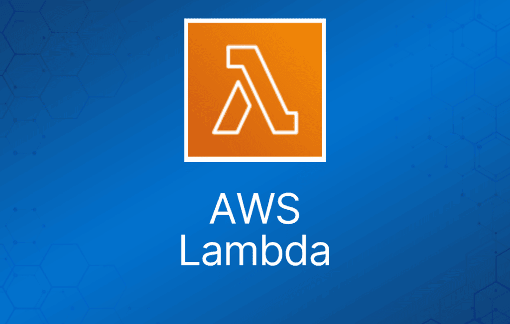
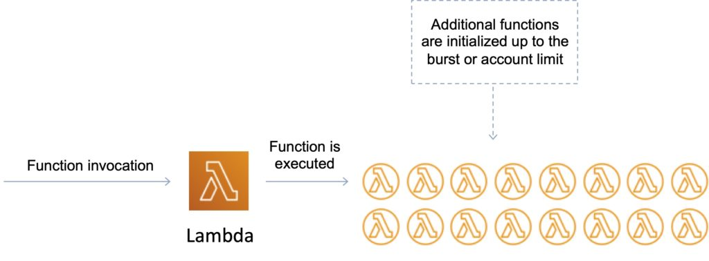

AWS Lambda 让你无需预置或管理服务器，就能以函数形式运行代码。
基于 Lambda 的应用由事件触发的函数组成。
使用无服务器（serverless）计算时，你的应用仍然运行在服务器上，但所有服务器管理工作都由 AWS 完成。
你无法登录运行 Lambda 函数的计算实例，也无法自定义操作系统或语言运行时。
Lambda 函数：
- 由代码及所有相关依赖组成。
- 配置信息与函数关联。
- 在创建函数时指定配置信息。
- 提供用于更新配置数据的 API。
你可以指定需要分配给 Lambda 函数的内存大小。
AWS Lambda 按你指定的内存比例分配 CPU 算力，比例与通用型 EC2 实例类型相同。
函数可以访问：
- AWS 服务或非 AWS 服务。
- 运行在 VPC 中的 AWS 服务（例如 RedShift、ElastiCache、RDS 实例）。
- 运行在 AWS VPC 中 EC2 实例上的非 AWS 服务。
要让 Lambda 函数访问私有 VPC 内的资源，必须提供额外的 VPC 专属配置信息，包括 VPC subnet ID 和 security group ID。
AWS Lambda 使用这些信息来设置弹性网络接口（ENI），从而使你的函数能够访问这些资源。
你可以按 1 MB 的步长申请额外内存，范围从 128 MB 到 10240 MB。
存在最大执行超时时间。
- 最长 15 分钟（900 秒），默认为 3 秒。
- 按运行时间计费。
- 达到超时时间时 Lambda 会终止函数。
代码通过使用 AWS SDK 发起的 API 调用来触发。
Lambda 在执行函数时代入一个 IAM 角色。
AWS Lambda 将代码存储在 Amazon S3 中，并进行静态加密。
Lambda 提供持续扩展能力——横向扩展（scale out），而非纵向扩展（scale up）。
Lambda 可将并发执行的函数扩展到默认上限（1000）。
Lambda 可以扩展到数万个并发执行。
Lambda 函数是无服务器且相互独立的，1 个事件 = 1 个函数。
函数可以触发其他函数，因此 1 个事件可以触发多个函数。
使用场景分为以下几类：
- 将 Lambda 函数与作为事件源的 AWS 服务结合使用。
- 通过 Amazon API Gateway 以 HTTPS 按需调用 Lambda 函数（自定义 REST API 和端点）。
- 使用自定义应用（移动端、Web 应用、客户端）以及 AWS SDK、AWS Mobile SDK 和 AWS Mobile SDK for Android 按需调用 Lambda 函数。
- 可以通过 AWS Lambda 控制台配置计划事件，按计划运行代码。
调用 Lambda 函数
你可以通过 Lambda 控制台、Lambda API、AWS SDK、AWS CLI 和 AWS 工具包直接调用 Lambda 函数。
你也可以配置其他 AWS 服务来调用你的函数，或者配置 Lambda 从流或队列中读取数据并调用你的函数。
调用函数时，你可以选择同步或异步调用。
其他 AWS 服务和资源直接调用你的函数。
例如，你可以配置 CloudWatch Events 按定时器调用你的函数，或配置 Amazon S3 在对象创建时调用你的函数。
每个服务在调用函数的方法、事件结构和配置方式上各不相同。
同步调用
你等待函数处理事件并返回响应。
当你同步调用函数时，Lambda 运行函数并等待响应。
函数执行结束后，Lambda 返回函数代码的响应以及附加数据，例如所执行函数的版本。要使用 AWS CLI 同步调用函数，请使用 invoke 命令。
$ aws lambda invoke –function-name my-function –payload ‘{ “key”: “value” }’ response.json { “ExecutedVersion”: “$LATEST”, “StatusCode”: 200 }
异步调用
异步调用函数时，你不会等待函数代码的响应。
对于异步调用，Lambda 会处理重试，并可以将调用记录发送到目标（destination）。
对于异步调用，Lambda 将事件放入队列并返回成功响应，不附带其他信息。一个单独的进程会从队列中读取事件并发送给你的函数。要异步调用函数，将调用类型参数设置为 Event。
$ aws lambda invoke --function-name my-function --invocation-type Event --payload '{ "key": "value" }' response.json { "StatusCode": 202 }
输出文件（response.json）不包含任何信息，但运行此命令时仍会创建。如果 Lambda 无法将事件加入队列，错误消息会显示在命令输出中。
事件源映射（Event source mappings）
Lambda 是事件驱动的计算服务，AWS Lambda 响应事件运行代码，例如 S3 存储桶或 DynamoDB 表中的数据变更。
事件源是产生事件的 AWS 服务或开发人员创建的应用程序，这些事件触发 AWS Lambda 函数运行。
对于不直接调用 Lambda 函数的服务，你可以使用事件源映射来处理流或队列中的项目。
支持的 AWS 事件源包括：
- Amazon S3。
- Amazon DynamoDB。
- Amazon Kinesis Data Streams。
- Amazon Simple Notification Service。
- Amazon Simple Email Service。
- Amazon Simple Queue Service。
- Amazon Cognito。
- AWS CloudFormation。
- Amazon CloudWatch Logs。
- Amazon CloudWatch Events。
- AWS CodeCommit。
- AWS Config。
- Amazon Alexa。
- Amazon Lex。
- Amazon API Gateway。
- AWS IoT Button。
- Amazon CloudFront。
- Amazon Kinesis Data Firehose。
- 其他事件源：按需调用 Lambda 函数。
其他事件源可以按需调用 Lambda 函数。
应用程序需要权限才能调用 Lambda 函数。
Lambda 可以响应通过 Amazon API Gateway 发起的 HTTP 请求或使用 AWS SDK 发起的 API 调用来运行代码。
Lambda 从中读取事件的服务：
事件源映射使用函数的执行角色（execution role）中的权限来读取和管理事件源中的项目。
权限、事件结构、设置和轮询行为因事件源而异。
要处理流或队列中的项目，你可以创建事件源映射。
函数处理的每个事件可以包含数百或数千个项目。
基于流的服务（DynamoDB、Kinesis）和 Amazon SQS 的事件源映射配置在 Lambda 侧完成。
注意：对于 Amazon S3 和 SNS 等其他服务，函数是异步调用的，配置在源端（S3/SNS）而非 Lambda 侧完成。
Lambda 版本
版本控制意味着你可以拥有函数的多个版本。
你可以使用版本管理 AWS Lambda 函数的部署。例如，你可以发布函数的新版本用于 beta 测试，而不影响稳定生产版本的用户。
函数版本包含以下信息：
- 函数代码及所有相关依赖。
- 执行函数的 Lambda 运行时。
- 所有函数设置，包括环境变量。
- 用于标识此函数版本的唯一 Amazon Resource Name (ARN)。
你在 $LATEST 上工作，这是代码的最新版本——它是可变的（可修改）。
当你准备发布 Lambda 函数时，就创建一个版本（版本是有编号的）。
编号版本从 1 开始分配，后续版本递增 1。
版本是不可变的（代码不能编辑）。
每个版本都有自己的 ARN。
由于不同版本具有唯一 ARN，这使你可以有效地为不同环境（如生产、预发或开发）管理它们。
限定 ARN（qualified ARN）带有版本后缀。
非限定 ARN（unqualified ARN）没有版本后缀。
你无法从非限定 ARN 创建别名。
Lambda 别名（Aliases）
Lambda 别名是指向特定 Lambda 版本的指针。
使用别名，你可以调用函数而无需知道引用的是函数的哪个版本。
别名是可变的。
别名使事件触发器/目标的配置保持稳定。
别名也有静态 ARN，但可以指向同一函数的任何版本。
别名还可用于在 Lambda 版本之间拆分流量（蓝/绿部署）。
通过为 Lambda 版本分配权重，别名可实现蓝/绿部署（对 $LATEST 无效，你需要为 $LATEST 创建别名）。
流量转移（Traffic Shifting）
随着别名流量转移功能的引入，现在可以轻松实现 Lambda 函数的金丝雀部署（canary deployment）。
通过更新别名上的额外版本权重，调用流量会按指定的权重路由到新函数版本。
在部署过程中，可以分析别名和版本的详细 CloudWatch 指标，或执行其他健康检查，以确保新版本健康后再继续。
以下 AWS CLI 命令示例将别名指向新版本，权重为 5%（原版本占 95% 流量）：
aws lambda update-alias --function-name myfunction --name myalias --routing-config '{"AdditionalVersionWeights" : {"2" : 0.05} }'
Lambda Handler
handler 是 Lambda 调用以执行你代码的函数——它是入口点。
创建 Lambda 函数时，你需要指定一个 handler，AWS Lambda 在代表你执行函数时会调用它。
你将 Lambda 函数 handler 定义为类中的实例方法或静态方法。
函数依赖
如果你的 Lambda 函数依赖外部库，如 AWS X-Ray SDK、数据库客户端等，你需要将这些包与代码一起安装并打包成 zip。
- Node.js 使用 npm 和 “node_modules” 目录。
- Python 使用 pip 的 —target 选项。
- Java 包含相关的 .jar 文件。
如果 zip 文件小于 50MB，直接上传到 Lambda，否则上传到 S3。
原生库（native libraries）需要在 Amazon Linux 上编译才能工作。
AWS SDK 默认随每个 Lambda 函数提供。
并发执行
管理并发
首次调用函数时，AWS Lambda 会创建函数实例并运行其 handler 方法来处理事件。当函数返回响应后，它会保持活跃，等待处理更多事件。如果在处理第一个事件时再次调用该函数，Lambda 会初始化另一个实例，函数将并发处理这两个事件。

函数的并发是指在给定时间处理请求的实例数量。对于初始流量突增，你的函数在一个区域中的累计并发可以达到 500 到 3000 之间的初始水平，具体因区域而异。
突发并发限制：
- 3000——美国西部（俄勒冈）、美国东部（弗吉尼亚北部）、欧洲（爱尔兰）。
- 1000——亚太（东京）、欧洲（法兰克福）。
- 500——其他区域。
初始突增之后，函数的并发每分钟可以额外扩展 500 个实例。这会持续进行，直到有足够的实例处理所有请求，或达到并发上限。
默认账户限制为每个区域每秒最多 1000 次执行（可以提高）。
这是一项安全功能，用于限制每个账户在每个区域中所有函数的并发执行总数。
超过并发限制的每次调用都会触发限流（throttle）。
如果超过并发执行限制，可能会遇到 TooManyRequestsException。
你可能会收到 HTTP 状态码 429，消息为 “Request throughput limit exceeded”。
限流行为：
- 同步调用返回限流错误 429。
- 异步调用自动重试（两次），然后进入死信队列（Dead Letter Queue，DLQ）。
DLQ 可以是 SNS 主题或 SQS 队列。
原始事件负载会被发送到 DLQ。
Lambda 函数需要具有 SNS / SQS 权限的 IAM 角色。
Lambda 还集成了 X-Ray 用于调试。
- 可以使用 X-Ray 追踪 Lambda。
- 需要在 Lambda 配置中启用，它会运行 X-Ray daemon。
- 在代码中使用 AWS SDK。
预留并发（Reserved Concurrency）
你可以在函数级别设置预留并发，以保证关键函数有一定数量的并发执行可用。
你最多可以预留到控制台中显示的未预留账户并发（Unreserved account concurrency）值，再减去 100（为没有预留并发的函数保留）。
要对函数限流，将预留并发设置为零。这会阻止任何事件被处理，直到你移除该限制。
为函数预留并发的步骤
- 打开 Lambda 控制台的函数页面。
- 选择一个函数。
- 在 Concurrency 下，选择 Reserve concurrency。
- 输入要为该函数预留的并发数量。
- 选择 Save。
预置并发（Provisioned Concurrency）
分配预置并发后，函数以与标准并发相同的突发行为进行扩展。
分配后，预置并发以极低的延迟处理传入请求。
当所有预置并发都在使用时，函数会正常扩展以处理任何额外请求。
Application Auto Scaling 更进一步，为预置并发提供自动扩展。
使用 Application Auto Scaling，你可以创建目标跟踪扩展策略（target tracking scaling policy），根据 Lambda 发布的利用率指标自动调整预置并发级别。
使用 Application Auto Scaling API 将别名注册为可扩展目标并创建扩展策略。
预置并发持续运行，并在标准调用费用之外单独计费。
成功与失败目标（Success and Failure Destinations）
Lambda 异步调用可以将事件或消息放入 Amazon Simple Notification Service (SNS)、Amazon Simple Queue Service (SQS) 或 Amazon EventBridge 进行进一步处理。
使用 Destinations，你可以将异步函数结果作为执行记录路由到目标资源，而无需编写额外代码。
执行记录以 JSON 格式包含请求和响应的详细信息，包括版本、时间戳、请求上下文、请求负载、响应上下文和响应负载。
对于每种执行状态（如 Success 或 Failure），你可以选择四种目标之一：另一个 Lambda 函数、SNS、SQS 或 EventBridge。Lambda 也可以配置为将不同的执行结果路由到不同的目标。
On-Success（成功时）：
- 当函数成功调用时，Lambda 会将每次成功调用的记录路由到目标资源。
- 你可以用它通过执行状态监控无服务器应用的健康状况，或基于调用结果构建工作流。
On-Failure（失败时）：
- Destinations 让你能够在处理函数调用成功的同时处理失败。
- 当函数调用失败时，例如重试次数用尽或事件存活时间超限（达到 TTL），
- Destinations 会将每次失败调用的记录路由到目标资源，以便进一步调查或处理。
- 与死信队列（DLQ）相比，Destinations 提供了更实用的能力，可以将额外的函数执行信息（包括代码异常堆栈跟踪）传递到更多目标服务。
- Destinations 和 DLQ 可以同时一起使用，但 Destinations 应被视为更优选的方案。
死信队列（Dead Letter Queue，DLQ）
你可以在 AWS Lambda 上配置死信队列（DLQ），以便对所有异步调用（包括通过 AWS 事件（S3、SNS、IoT 等）传递的调用）的消息处理获得更多控制。
死信队列保存被丢弃的事件以便进一步处理。死信队列的作用与 on-failure 目标相同：当事件所有处理尝试都失败、或未被处理而过期时使用。
但是，死信队列属于函数版本特定的配置，因此在发布版本时就被锁定。on-failure 目标还支持额外的目标，并在调用记录中包含函数响应的详细信息。
你可以在创建或更新 Lambda 函数时配置 ‘DeadLetterConfig’ 属性来设置 DLQ。
你可以提供 SQS 队列或 SNS 主题作为 DLQ 的 ‘TargetArn’，在标准重试策略（失败后额外重试 2 次）用尽后，AWS Lambda 会将调用 Lambda 函数的事件对象写入此端点。
Lambda Layers
你可以配置 Lambda 函数以层（layers）的形式引入额外的代码和内容。
层是一个 ZIP 归档，包含库、自定义运行时或其他依赖。
使用层，你可以在函数中使用库，而无需将它们包含在部署包中。
一个函数最多可以同时使用 5 个层。
层会被解压到函数执行环境的 /opt 目录。
每种运行时根据语言在 /opt 下的不同位置查找库。
Lambda@Edge
Lambda@Edge 允许你在全球 AWS 站点运行代码，无需预置或管理服务器，以最低的网络延迟响应最终用户。
Lambda@Edge 让你运行 Node.js 和 Python Lambda 函数来自定义 CloudFront 交付的内容，并在离观看者更近的 AWS 站点执行这些函数。
函数响应 CloudFront 事件运行，无需预置或管理服务器。你可以使用 Lambda 函数在以下节点更改 CloudFront 请求和响应：
- CloudFront 收到观看者请求之后（viewer request）。
- CloudFront 将请求转发到源之前（origin request）。
- CloudFront 收到来自源的响应之后（origin response）。
- CloudFront 将响应转发给观看者之前（viewer response）。
你只需将 Node.js 代码上传到 AWS Lambda，并配置函数由 Amazon CloudFront 请求触发。
随后，当收到内容请求时，代码就可以在全球 AWS 站点执行，并随 CloudFront 请求量在全球范围扩展。
Lambda 与 Amazon VPC
你可以将 Lambda 函数连接到 VPC 中的私有子网。
Lambda 需要以下 VPC 配置信息才能连接到 VPC：
- 私有子网 ID。
- Security Group ID（具有所需访问权限）。
Lambda 使用这些信息，通过私有子网中的可用 IP 地址设置弹性网络接口（ENI）。
Lambda 函数只能访问单个 VPC。如果指定了多个子网，它们必须都在同一个 VPC 中。
默认配置下，配置为访问特定 VPC 中资源的 Lambda 函数将无法访问互联网。
如果需要访问互联网，你需要在 VPC 中创建 NAT 来转发此流量，并配置 security group 允许此出站流量。
注意公共主机名的 DNS 解析，因为它可能增加函数运行时间（成本）。
无法连接到专用租户（dedicated tenancy）VPC。
考试提示：如果 Lambda 函数需要连接 VPC 且需要访问互联网，请确保连接到具有指向 NAT Gateway 路由的私有子网（NAT Gateway 位于公共子网中）。
Lambda 使用函数的权限来创建和管理网络接口。要连接到 VPC，函数的执行角色必须具有以下权限：
- ec2:CreateNetworkInterface
- ec2:DescribeNetworkInterfaces
- ec2:DeleteNetworkInterface
这些权限包含在 AWSLambdaVPCAccessExecutionRole 托管策略中。
仅在需要时才连接 VPC，因为它会减慢函数执行速度。
构建 Lambda 应用
你可以使用 AWS Serverless Application Model (AWS SAM) 部署和管理无服务器应用。
AWS SAM 是一种规范，规定了在 AWS 上表达无服务器应用的规则。
该规范与 AWS CloudFormation 目前使用的语法保持一致，并作为一组资源类型（称为“serverless 资源”）在 AWS CloudFormation 中原生支持。
你可以使用 AWS CodePipeline 和 AWS CodeDeploy 自动化无服务器应用的发布流程。
你可以为 Lambda 函数启用 AWS X-Ray 追踪。
Elastic Load Balancing
Application Load Balancer (ALB) 支持将 AWS Lambda 函数作为目标。
你可以将 Lambda 函数注册为目标，并配置监听器规则将请求转发到 Lambda 函数的目标组。
考试提示：可以使用 API、AWS Management Console 或 CLI 将函数注册到目标组。
当负载均衡器将请求转发到以 Lambda 函数为目标的目标组时，它会调用你的 Lambda 函数，并以 JSON 格式将请求内容传递给 Lambda 函数。
限制：
- Lambda 函数和目标组必须在同一账户和同一区域中。
- 发送给 Lambda 函数的请求体最大为 1 MB。
- Lambda 函数可发送的响应 JSON 最大为 1 MB。
- 不支持 WebSocket。Upgrade 请求会被拒绝并返回 HTTP 400 状态码。
默认情况下，lambda 类型的目标组禁用健康检查。
你可以启用健康检查以通过 Amazon Route 53 实现 DNS 故障转移。Lambda 函数可以在响应健康检查请求之前检查下游服务的健康状况。
如果你使用 AWS Management Console 创建目标组并注册 Lambda 函数，控制台会代表你向 Lambda 函数策略添加所需权限。
否则，在使用 AWS CLI 创建目标组并注册函数后，你必须使用 add-permission 命令授予 Elastic Load Balancing 调用 Lambda 函数的权限。
Lambda 限制
内存——最小 128 MB，最大 10,240 MB，以 1 MB 递增。
每次调用的临时磁盘容量（/tmp 空间）——512 MB。
环境变量大小最大 4 KB。
文件描述符数量——1024。
进程和线程数量（合计）——1024。
每个请求的最大执行时长——900 秒。
每账户并发执行数——1000（软限制）。
函数突发并发 500–3000（因区域而异）。
调用负载：
- 同步 6 MB。
- 异步 256 KB。
Lambda 函数部署包大小为 50 MB（压缩后），解压后 250 MB。
运维与监控
Lambda 自动监控 Lambda 函数并通过 CloudWatch 报告指标。
Lambda 跟踪请求数量、每个请求的延迟以及导致错误的请求数量。
你可以使用 AWS Lambda 控制台、CloudWatch 控制台和其他 AWS 资源查看请求率和错误率。
你可以使用 AWS X-Ray 可视化应用的组件，识别性能瓶颈，并排查导致错误的请求。
你的 Lambda 函数将跟踪数据发送到 X-Ray，X-Ray 处理这些数据以生成服务地图和可搜索的跟踪摘要。
AWS X-Ray Daemon 是一个软件应用程序，收集原始分段数据并将其转发到 AWS X-Ray 服务。
该 daemon 与 AWS X-Ray SDK 协同工作，使 SDK 发送的数据能够到达 X-Ray 服务。
当你追踪 Lambda 函数时，X-Ray daemon 会自动在 Lambda 环境中运行，收集跟踪数据并发送到 X-Ray。
执行角色必须具有写入 X-Ray 的权限。
开发最佳实践
在函数 handler 之外执行一次性的耗时任务，例如：
- 连接数据库。
- 初始化 AWS SDK。
- 拉取依赖或数据集。
使用环境变量存储：
- 连接字符串、S3 存储桶等。
- 密码和其他敏感数据（可使用 KMS 加密）。
将部署包大小最小化到运行时所需。
- 如有需要，拆分函数。
- 牢记 Lambda 限制。
避免使用递归代码，永远不要让 Lambda 函数调用自身。
除非必要，否则不要将 Lambda 函数放入 VPC（初始化时间可能更长）。
计费
定价基于：
- 请求数量。
- 请求时长，从代码开始执行到返回或终止的时间计算。
- 分配给函数的内存量。